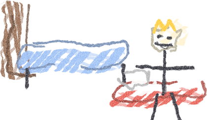
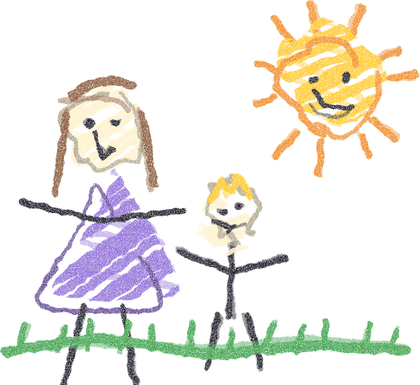
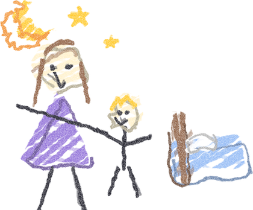

KIPWORTH
Why He Comes and Finds You in the Night
Five things that worked for real UK parents, and what they told their kid.
It's not your fault. And he's not being naughty.
Every quote is a real UK parent, word for word.
Save the PDF to your phone
1. 18 UK parents say this worked.
His own mattress, next to your bed
“She was happy that she wasnt alone and i didnt have to get out of bed.”
- A bed for him on their own floor: “a mattress and bedding for him”, “on the floor next to my side of the bed”.
- He brought his own things: “she could just bring her pillow”.
- He came in on his own. They stayed in bed: “she would creep in and sleep on it.”
What they told their kid“told her anytime she felt afraid she could just bring her pillow and sleep on our floor but please don't wake us up unless really needed”
Where it didn't work: Two parents say he was still on their floor a year on. One: “he’s taken to getting in our bed now instead”.
2. 9 UK parents say this worked.
A prize he picks himself
“She chose the sweets and has been sleeping through - wish I’d tried it earlier!”
- They found the one thing he wanted: “a particular toy”, “a few sweets”, “a sticker”.
- They tied it to the whole night in his own bed.
- They paid up, night by night: “we'd give them £1 each night they spent in their own bed.”
What they told their kid“Gave her the choice - she could come in if she wanted but it meant she lost a treat (a few sweets) the next day.”
Where it didn't work: At least six parents say it did nothing: “she literally didn't care as long as she could get in my bed.”

3. 9 UK parents say this worked.
Talking about the night, in the daytime
“talking about things not being real in the day, not at night”
- They talked in the day, not at 2am.
- They took the scary thing seriously: “I spent a lot of time explaining that the monsters (or whatever) are in his head.”
- They let him set the pace: “it was all her suggestion rather than being forced on her.”
What they told their kidThe sentence from the Reel, and how it ends:“lots of people wake in the night, but then roll over and go back to sleep… so she just needed to stay in her bed…”
Where it didn't work: Two parents say nothing got through: “we've been firm, gentle, angry, you name it but he cries and is so scared.”
4. 3 UK parents say this worked.
Night tickets
“My Daughter used more than 30 the first night.”
- Tickets at bedtime: “we introduced 'bedtime tickets'.”
- Every call or visit in the night costs one: “that's absolutely fine and allowed, but costs 1 token.”
- When they are gone, they are gone. The number came down: “Eventually we got down to 3”.
What they told their kidThe rule, in one parent's words:“If she calls in the night, gets you up, comes in to you, that's fine, but it costs a token. If she's got tokens left in the morning, she gets a reward.”
Where it didn't work: Nobody who tried it says it failed. But three houses is thin.

5. 6 UK parents say this worked.
Walking him back, without a word
“It took 14 nights, he returned every 20 mins for 14 nights.”
- They took him back the moment he turned up: “returning as soon as she appeared”.
- They said nothing: “a silent return”.
- They did it again, and again: “walking her back to her bed every hour”.
What they told their kidAlmost nothing. One parent talked instead: “explained every night that she had to sleep in her own.”
Where it didn't work: At least five parents say it did not. It is the one with the most trips: “it ends up in an almighty battle in the middle of the night and we are all exhausted”.
The checklist
In the Reel, she tries three. No parent here says they did all three. Pick ONE.
- His mattress: on my floor, next to my bed, his own pillow.
- A prize he picks: the thing HE wants, for the whole night in his own bed.
- The daytime talk: we talked about the night in the day, not at 2am.
- Night tickets: one per visit, something in the morning for what is left.
- Walking him back: every time, without a word.
None of it is a promise for your house.
Sleep well. Or at least, sleep.@kipworth.sleepWhat time does yours turn up?
More from KipworthWhy Nobody's Asleep Yet: for bedtime itself, four battles, and one thing to try tonight for each.Open it